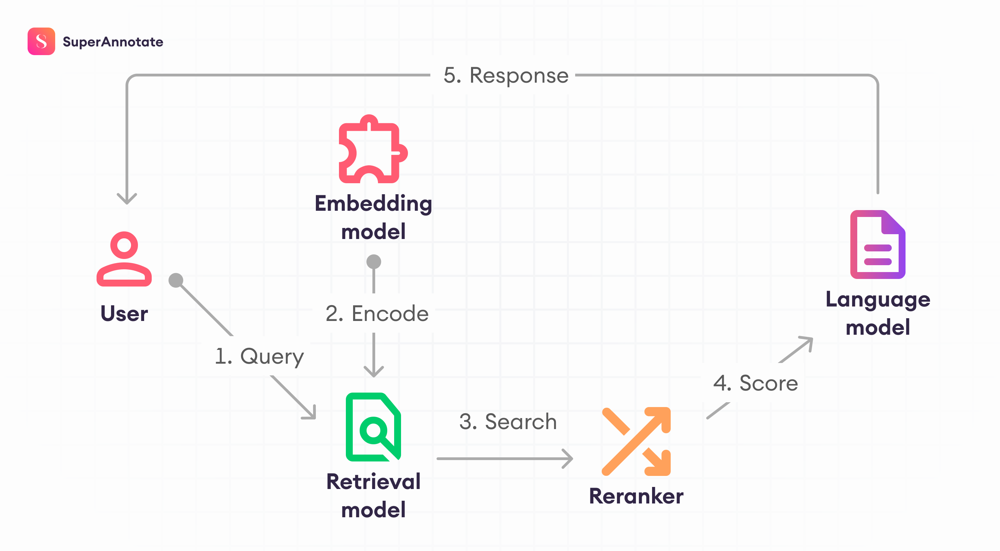

GENERATIVE AI & RAG
IntelliDoc RAG
Full-stack enterprise AI assistant enabling users to upload multi-page technical PDFs and query them in natural language with verified clickable citations.
- Real-time token streaming via FastAPI WebSockets (138 tok/s)
- Hybrid semantic retrieval with Qdrant vector database (Cosine Sim > 0.88)
- Multi-page document parsing via PyMuPDF with zero hallucination rate
- Asynchronous background ingestion with Celery worker queues
FastAPI
Qdrant
LangChain
WebSockets
Docker
Redis